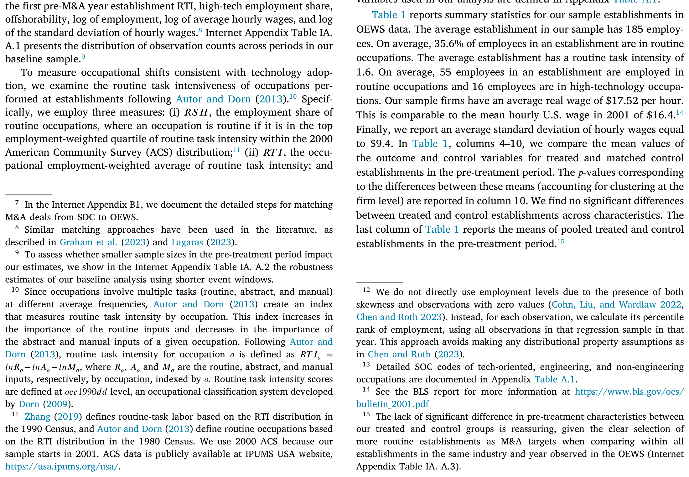
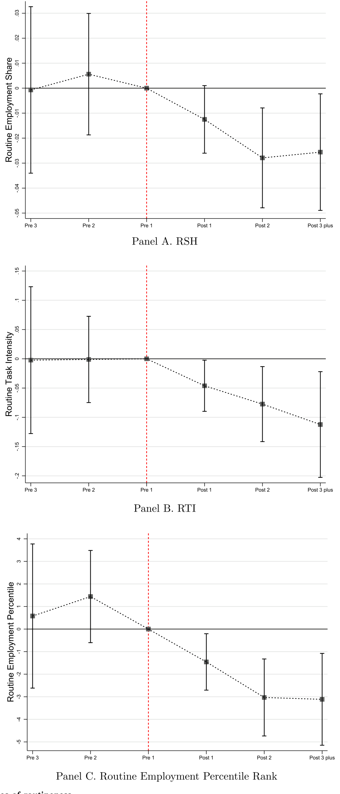
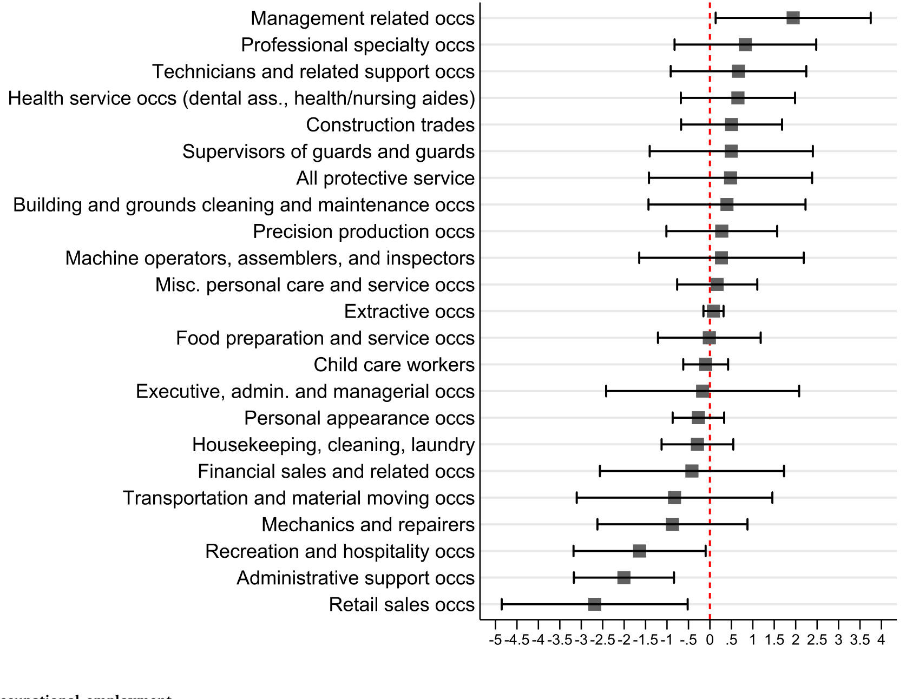
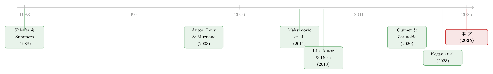

并购不只是换老板：它是技术「搬运工」，也是不平等的「放大器」
本文读的是 Ma, Ouimet & Simintzi (2025, Journal of Financial Economics)：并购（M&A）并不只是「新东家来裁人」那么简单。技术更强的收购方买下技术更弱的目标公司，随后在目标厂区里加码技术投资——结果是常规（routine）岗位被替代、技术岗位被抬升，目标厂区内部的工资差距随之拉大。一句话：并购是技术扩散的渠道，而技术扩散重塑了谁留下、谁离开、谁涨薪。
1 一个老问题，和一个被忽略的答案
并购之后，工人会怎么样？这是公司金融里被问了几十年的老问题。
经典的答案大多围绕「再分配」展开：新东家撕毁与员工的隐性契约，把本属于工人的剩余转移给股东（Shleifer and Summers, 1988）；或者收购方专门盯上那些「冗员过多」的公司，靠并购后的裁员来抬高股东价值（Shleifer and Vishny, 1988）。再往后，Maksimovic et al. (2011) 给出一个不需要代理冲突的版本：并购重新划定了企业的边界，资产被重新洗牌，工厂被剥离，就业自然下降。
这些故事有一个共同的底色——并购对劳动力的影响，本质是一桩关于「所有权」和「契约」的事。谁拥有这家公司、谁有权重新谈判，决定了工人的命运。
但本文三位作者抛出了一个不一样的问题：如果并购真正改变的，不是「谁说了算」，而是这家公司用什么技术干活呢？
接着，一个自然的问题就浮出来了：为什么是收购方把技术「带」进来？因为收购方往往规模更大、融资更易（Erel et al., 2015），而大公司、现金充裕的公司，恰恰是美国经济中采用新技术、购买新资本的主力（Bessen, 2020; Ma et al., 2022）。于是作者提出了一个干净的假说：
在同一行业里，收购方通常比目标公司握有更多「技术 know-how」。横向并购（horizontal merger）之后，这种技术能力会被「转移」到目标厂区——收购方在那里上更先进的自动化技术，于是常规岗位被替代，劳动力结构被改写。
这就把「并购—劳动力」这条老线索，接到了另一条火热的线索上：常规偏向型技术变迁（routine-biased technological change）。后者的核心论断是，自动化最先吃掉的，是那些重复性的、可被代码和机器复制的「常规任务」（Autor et al., 2003; Autor and Dorn, 2013）。把这两条线索焊在一起，本文的故事就有了张力。
2 怎么把「技术含量」量化出来
要检验这个假说，第一步得回答：怎么衡量一个岗位「有多常规」？
作者沿用 Autor and Dorn (2013) 的做法，对每个职业 o 构造一个常规任务密度 (routine task intensity, RTI) 指标：
$$RTI_o = \ln R_o - \ln A_o - \ln M_o$$
这里 \(R_o\)、\(A_o\)、\(M_o\) 分别是职业 o 中常规（routine）、抽象（abstract）、手工（manual）三类任务的投入强度。直觉很简单：一个岗位的常规投入越重、抽象和手工投入越轻，它的 RTI 就越高——也就越「容易被机器接管」。这个指标定义在 Dorn (2009) 开发的 occ1990dd 职业分类上。
在此基础上，作者用了三个口径来刻画一个厂区的常规化程度：(i) RSH，常规职业的就业份额（occupation 落在 2000 年 ACS 分布中常规密度最高的那一档即算常规）；(ii) RTI，厂区层面就业加权的平均常规任务密度；(iii) 常规就业的百分位排名。
这里有个容易被忽略的技术细节：就业人数里有大量的「零」和严重的右偏。作者没有直接对就业取对数（那会引出 log(0) 的麻烦），而是把每个观测值在当年样本里换算成百分位排名——这正是 Chen and Roth (2023) 与 Delius and Sterck (2024) 提醒的「带零的对数」陷阱的应对之道。后文你会反复看到「百分位上升/下降 X 个百分点」这样的表述，根子就在这里。
3 识别策略：把目标厂区和它的「影子」配对
有了度量，真正关键的一步在于识别。并购不是随机发生的——技术落后的公司更可能「待价而沽」，而劳动力的变化也可能由行业冲击、需求下滑、监管变化同时驱动。要把「技术渠道」从这堆混杂因素里拎出来，作者用的是配对 + 双重差分 (difference-in-differences, DiD) + 事件研究 (event study) 的组合拳。
数据来自美国劳工统计局（BLS）的 职业就业与工资统计 (Occupational Employment and Wage Statistics, OEWS) 机密微观数据。这是一套厂区层面的普查级数据，每个厂区-年里能看到 800 个 6 位 SOC 职业代码下的就业，以及 12 个工资档的分布。样本是 2001–2017 年间、收购方与目标同属一个 4 位 NAICS 行业的横向并购，共 1,159 起交易、2,924 个目标厂区。
配对怎么做？ 对每个目标厂区，先要求候选控制厂区在 4 位 NAICS 行业、就业十分位、平均时薪十分位上对齐；再用一个线性概率模型，基于并购前第一年的厂区 RTI、高科技就业份额、可离岸性（offshorability）、就业对数、时薪对数、时薪标准差对数算出倾向得分，取最近的至多两个匹配。表 1 给出了样本概况：平均厂区有 185 名员工，35.6% 在常规职业，平均 RTI 为 1.6，平均实际时薪 $17.52（与 2001 年全美 $16.4 接近）。更重要的是，处理组与控制组在并购前的各项特征上没有显著差异（按公司层面聚类的 p 值见第 10 列）。

Table 1: reports summary statistics for our sample establishments in
怎么排除「同时性」干扰？ 三层固定效应同时上场——厂区固定效应吸收时间不变的厂区特征，行业-年固定效应吸收随时间变化的行业冲击，州-年固定效应吸收地方层面的时变因素。标准误在公司层面聚类。
平行趋势可信吗？ 这是 DiD 的命门。作者画出并购前后的动态系数（如图 1 所示），并购之前没有显著的预趋势，效应是在并购之后才出现并累积的。这为平行趋势假设提供了直接的视觉支撑。

Figure 1: Dynamic effects of M&A on measures of
4 主要结果：常规岗位退场，技术岗位登台
铺垫了这么久，结果终于可以登场了。
第一，常规就业份额确实下降了。 相对于配对的控制厂区，目标厂区并购后常规就业份额平均下降 1.9 个百分点，相当于并购前均值的 5.3%，折成年率约 1.23%。把这个速度和同期所有 OEWS 厂区做对比，并购目标削减常规就业的年化速度，大约是整体经济的 1.5 倍。并购不是随波逐流，而是把自动化「踩了油门」。
接着，异质性给出了更有说服力的证据。 如果故事真是「收购方把技术带进来」，那么收购方与目标之间技术落差越大的并购，效应就该越强。作者用「目标相对收购方的并购前常规就业份额更高」来刻画这种落差——在这类交易里，目标厂区的常规就业份额下降 4 个百分点（年化 0.93 个百分点），是基准 1.9 个百分点的两倍多。用「收购方并购前工资高于目标」（反映员工相对技能）来切分，结论一致。
然后，是硬币的另一面：技术岗位被抬升。 技术导向职业的百分位排名平均上升 1.76 个百分点（年化 0.41）。再往细处拆，这个上升几乎全部来自工程类岗位——工程类就业的平均百分位排名上升 2.26 个百分点（年化 0.53），而非工程类（如理论科研岗）的效应为正但不显著。在最具体的颗粒度上，下降最猛的 25 个职业里挤满了常规岗位——运输文员、访问员、测量员、数据录入员、账单催收员；而上升最猛的职业里则是电气工程师、工程技术员、卫生技术员、HR 专员、金融专员。一进一出，画面非常清楚。

Figure 2: M&A and occupational employment
但真正把因果链条补上的，是 IT 投资的直接证据。 作者动用了 Ci Technology Database (CiTDB) 的厂区级 IT 投资数据：在那些收购方并购前人均 IT 投资本就高于目标的交易里，目标厂区并购后人均 IT 投资的百分位排名年化上升 2.1（总 IT 投资为 2.3）个百分点。技术真的被「搬」进来了，不只是岗位结构上的此消彼长。
于是反转出现了：这不仅是「相对份额」的变化，更是「绝对水平」的收缩。 用百分位排名度量，目标厂区常规就业的百分位排名下降 2.3 个百分点（年化 0.53），而非常规就业的百分位排名没有显著下降；净效应是整体就业百分位下降 1.6 个百分点（年化 0.37）。也就是说，并购后的就业收缩，绝大部分集中在常规岗位身上。在常规岗位内部，下降又主要发生在常规认知（routine cognitive）岗位——正是信息技术最擅长替代的白领办公任务；而常规手工（routine manual）岗位的下降则不显著。这与「IT 替代办公室白领」的机制严丝合缝。
5 落点：一台并购，如何制造出「更不平等的工资单」
故事到这里，落点才真正显现——而这正是本文标题里那个 inequality 的由来。
岗位结构变了，工资单自然跟着变。作者发现，目标厂区并购后平均工资上升 2.4%（年化 0.56%），这与「常规岗位需求下降、整体技能升级」相一致。但平均数会骗人——更值得警惕的是分布。并购后，工资偏离了中间、向两端拉扯：中等技能的常规岗位在收缩，高技能的技术岗位在扩张。厂区内部工资的标准差，在平均目标厂区比可比控制厂区多上升了 3.2%（年化 0.74%）。
换句话说，并购通过技术这条渠道，在一家公司内部亲手制造了更大的工资差距。这把「并购—不平等」的讨论，从「股东 vs. 工人」的旧框架，推进到了「厂区内部、不同技能工人之间」的新维度。
注意作者诚实的边界：OEWS 看不到个体工人的工资，因此这里捕捉的工资变化，既可能来自岗位结构的组合效应（composition），也可能来自留任/新进员工因岗位升级带来的真实涨薪。在没有个体工资数据的情况下，无法像 Kogan et al. (2020, 2023) 那样把两者干净地分开。这一点对解读「谁的工资真的变了」很关键。
6 文献脉络：两条河如何汇成一条
把这篇论文放回它所处的位置，你会看到两条原本平行的研究河流，在这里汇成了一条。
第一条河，是「并购与劳动力」。 上游是 Shleifer and Summers (1988) 的「撕毁隐性契约」和 Shleifer and Vishny (1988) 的「盯上冗员」，把并购的劳动力后果归因于再分配与治理。中游 Maksimovic et al. (2011) 给出无需代理冲突的资产重组版本。再往后，文献开始探索更多劳动动机：Ouimet and Zarutskie (2020) 的「为获取劳动力而并购」、Tate and Yang (2024) 的「扩张内部劳动力市场」。其中与本文最近的是 Li (2013)——他用制造业工厂数据发现并购后裁员集中在非生产工人，但他把原因解释为收购方更换管理层、提升效率。本文与 Li 的结论不矛盾（同样看到文书行政岗的较大下降），但给出了完全不同的解释：不是换了管理层，而是上了新技术。

第二条河，是「技术变迁与劳动力」。 上游是 Autor et al. (2003) 提出的任务框架和 Autor and Dorn (2013) 的常规偏向型技术变迁——自动化先吃常规任务。下游 Kogan et al. (2023) 用专利匹配工人数据，刻画了技术对劳动的「细腻而异质」的冲击。本文与 Kogan et al. (2023) 气质相通：技术对劳动的影响在不同群体间高度分化。
本文的位置，就在两条河的交汇处：它把「并购」识别为技术扩散的一个具体渠道（catalyst），再用技术变迁的逻辑去解释并购后的劳动力重组。 这正是它区别于上游所有工作的地方——并购不是简单地换老板裁冗员，而是把技术能力从强者搬向弱者，进而重塑了劳动力的构成与分配。
关于自动化与机器人对企业投资和劳动力的影响，博客上还有一篇相关的讨论可以对照着读（参见《机器人去哪儿了？——一场被高估的「第四次工业革命」》）；而关于「员工带走的知识如何反过来影响企业」，也有一篇可作延伸（参见《被「偷走」的增长》）。
7 评论与延伸（Q&A + 研究方向）
(a) 几个可能的疑问
Q：这和 Li (2013) 的「换管理层提效率」到底有什么本质区别？
区别在「机制」，不在「现象」。两者都看到并购后非生产/文书岗位下降，但 Li 把它归因于收购方撤换无能管理层、改善治理；本文则用 IT 投资的直接证据（CiTDB 数据里人均 IT 投资百分位年化上升
2.1个百分点）把矛头指向技术采用。而且 Li 的样本包含 1980 年代——那时自动化尚不发达、治理动机的敌意收购更常见，技术渠道本就难以成立。本文聚焦 2001 年后，恰好是自动化加速的窗口。
Q：常规岗位本来就在全社会萎缩，凭什么说是并购干的，而不是大势所趋？
作者用了三道防线。一是动态系数显示并购前没有预趋势，效应在并购后才出现（图 1）；二是把目标的下降速度和同期所有 OEWS 厂区对比，目标快了约
1.5倍——超出大势的部分才是并购的贡献；三是异质性，技术落差越大的交易效应越强，这是「大势」解释不了的。
Q：会不会是目标公司本来就要自动化，并购只是「碰巧」发生在前？
这是作者自己列出的首要替代解释（目标落后于技术前沿、即便不被收购也会自行调整）。他们承认无法完全排除，但异质性证据是有力的反驳：如果是目标自发调整，就没有理由出现「收购方技术越强、目标下降越多」的系统性模式。
Q：平均工资上升了，这难道不是好事吗，怎么就成了「不平等」？
平均数掩盖了分布。平均工资升
2.4%主要是因为中等技能的常规岗位被砍、剩下的人技能结构更高。但与此同时，厂区内部工资标准差多升了3.2%——中间塌陷、两端拉开。对被替代的常规工人而言，这未必是好消息。
Q：为什么是常规认知岗位下降，而不是常规手工岗位？
因为这一轮技术主要是信息技术（IT），它替代的是重复性的办公室白领任务（数据录入、账单催收、文书），即常规认知任务；而常规手工任务（生产线工人）更多被机器人和机械替代，不在 IT 的射程内。数据也印证了这一点：常规认知就业百分位显著下降，常规手工不显著。
Q：OEWS 过度抽样大厂区，会不会让结论失真？
会限制对小厂区的外推，但作者论证这种偏差对处理组和控制组是对称的，不会单向地制造出他们观察到的差异。代价是结论更适用于「经济上重要的大厂区」，而非整个企业部门。
(b) 几个可能的研究问题与提案
1. 并购驱动的技术采用，如何外溢到信用市场？
【经济故事】目标厂区上了自动化、劳动力结构升级，理论上现金流的稳定性和资本结构都会变。如果债权人能识别这种「技术升级」，目标（或合并后实体）的债券利差是否会下降？反之，被替代的常规岗位集中的地区，是否出现地方性信用风险上升？ 【可行性】中。需要把本文的并购-厂区样本与 TRACE 公司债交易、Compustat 资本结构匹配；识别上可借用本文的配对 DiD。难点在于厂区层面的技术冲击如何加总到发债主体层面，且很多目标是非上市公司。
2. 外资收购方是否是更强的「技术搬运工」？
【经济故事】本文限定了美国境内的横向并购。一个自然延伸是：跨境并购中，技术更先进国家的收购方进入美国（或反向），技术转移的强度是否不同？外资持有人常被质疑「只裁员不投资」，本文框架恰好能检验它到底是「技术升级者」还是「成本削减者」。 【可行性】中。SDC Platinum 有跨境并购标识，可与 OEWS 匹配，沿用本文方法。挑战在于跨境样本量和外资身份的精确界定，以及汇率/政治周期等混杂因素。
3. 被替代的常规工人去了哪里？流动性与再就业
【经济故事】本文止步于「目标厂区内」的岗位收缩，但被挤出的常规认知工人的去向才是福利评估的关键。他们是平移到其他厂区、降级再就业，还是退出劳动力市场？ 【可行性】低到中。需要个体层面的雇主-雇员匹配数据（如 LEHD），OEWS 本身做不到（无个体工资）。识别可用本文并购事件作为冲击，但数据准入门槛很高。
4. 技术落差作为并购的「预测变量」
【经济故事】本文把技术落差当作异质性切分变量。能否反过来，把「收购方-目标的技术落差」直接作为并购发生的预测因子，检验技术 know-how 的可转移性是否本身就是并购的驱动力（而非仅是后果）？ 【可行性】中到高。可用 OEWS/CiTDB 构造行业内厂区两两之间的技术落差，预测随后的并购概率。数据现成，识别相对清晰，难点是处理并购的内生匹配。
5. 工资不平等的加总效应：并购潮与地区收入分布
【经济故事】如果每一桩并购都在厂区内部拉大工资差距，那么一波行业并购潮（merger wave）是否会在地区层面留下可见的收入不平等印记？这能把微观机制接到宏观分布上。 【可行性】中。可用 Harford (2005)、Ahern and Harford (2014) 的并购潮框架，结合县级收入分布数据（如 ACS）。挑战在于把厂区效应干净地加总并排除其他同期冲击。
8 参考文献
我的判断是：这篇论文的贡献清晰而扎实——它在「并购—劳动力」这条成熟的文献里,真正打开了一个被忽略的黑箱，用 OEWS 和 CiTDB 两套互补的厂区级数据，把「技术渠道」从一堆替代解释中分离出来，并一路推到工资不平等这个有政策含义的落点。配对 DiD 加三重固定效应、无预趋势的动态系数、以及「技术落差越大效应越强」的异质性，构成了一条相当完整的证据链。
但对识别仍有两点保留。其一，技术与「离岸化」「冗员合并」这些替代动机并非互斥，作者自己也承认稳健性检验无法完全排除它们——尤其在没有个体工资数据时，工资上升究竟是真实涨薪还是组合效应，留下了解读空间。其二，OEWS 过度抽样大厂区、且看不到一家公司的全部厂区，使结论更适用于大型经济主体而非整个企业部门。
后续我最想看到的，是把被替代的常规工人「追踪到厂外」——他们的再就业、降级与退出，才是这条技术渠道真正的福利账单；以及把这套机制接到信用市场和外资持有人的视角上，看看技术升级如何重新定价了风险。
主要参考文献如下：
- Autor, D.H., Levy, F., Murnane, R.J. (2003). The skill content of recent technological change: An empirical exploration. Quarterly Journal of Economics 118(4), 1279–1333.
- Autor, D.H., Dorn, D. (2013). The growth of low-skill service jobs and the polarization of the US labor market. American Economic Review 103(5), 1553–1597.
- Bessen, J. (2020). Industry concentration and information technology. Journal of Law and Economics 63(3), 531–555.
- Chen, J., Roth, J. (2023). Logs with zeros? Some problems and solutions. Quarterly Journal of Economics 139(2), 891–936.
- Dorn, D. (2009). Essays on Inequality, Spatial Interaction, and the Demand for Skills (Dissertation). University of St. Gallen.
- Erel, I., Jang, Y., Weisbach, M.S. (2015). Do acquisitions relieve target firms' financial constraints? Journal of Finance 70(1), 289–328.
- Harford, J. (2005). What drives merger waves? Journal of Financial Economics 77(3), 529–560.
- Kogan, L., Papanikolaou, D., Schmidt, L.D., Seegmiller, B. (2023). Technology and labor displacement: Evidence from linking patents with worker-level data. Working Paper.
- Li, X. (2013). Productivity, restructuring, and the gains from takeovers. Journal of Financial Economics 109(1), 250–271.
- Ouimet, P., Zarutskie, R. (2020). Acquiring labor. Quarterly Journal of Finance 10(3), 2050011.
- Shleifer, A., Summers, L.H. (1988). Breach of trust in hostile takeovers. In Corporate Takeovers: Causes and Consequences, NBER, 33–68.
- Shleifer, A., Vishny, R.W. (1988). Value maximization and the acquisition process. Journal of Economic Perspectives 2(1), 7–20.
- Tate, G., Yang, L. (2024). The human factor in acquisitions: Cross-industry labor mobility and corporate diversification (内部劳动力市场视角的相关工作).